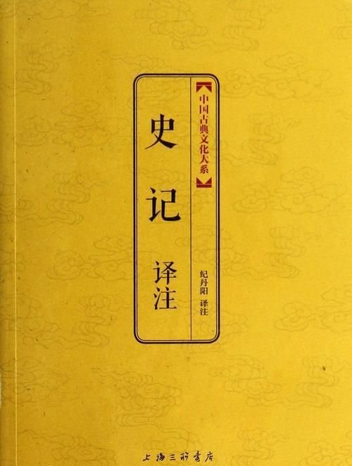

五帝本纪#

黄帝者，少典之子，姓公孙，名曰轩辕。生而神灵，弱而能言，幼而徇齐，长而敦敏，成而聪明。轩辕之时，神农氏世衰。诸侯相侵伐，暴虐百姓，而神农氏弗能征。於是轩辕乃习用干戈，以征不享，诸侯咸来宾从。而蚩尤最为暴，莫能伐。炎帝欲侵陵诸侯，诸侯咸归轩辕。轩辕乃修德振兵，治五气，?五种，抚万民，度四方，教熊罴貔貅貙虎，以与炎帝战於阪泉之野。三战，然後得其志。蚩尤作乱，不用帝命。於是黄帝乃徵师诸侯，与蚩尤战於涿鹿之野，遂禽杀蚩尤。而诸侯咸尊轩辕为天子，代神农氏，是为黄帝。天下有不顺者，黄帝从而征之，平者去之，披山通道，未尝宁居。
东至于海，登丸山，及岱宗。西至于空桐，登鸡头。南至于江，登熊、湘。北逐荤粥，合符釜山，而邑于涿鹿之阿。迁徙往来无常处，以师兵为营卫。官名皆以云命，为云师。置左右大监，监于万国。万国和，而鬼神山川封禅与为多焉。获宝鼎，迎日推筴。举风后、力牧、常先、大鸿以治民。顺天地之纪，幽明之占，死生之说，存亡之难。时播百穀草木，淳化鸟兽蟲蛾，旁罗日月星辰水波土石金玉，劳勤心力耳目，节用水火材物。有土德之瑞，故号黄帝。
黄帝二十五子，其得姓者十四人。
黄帝居轩辕之丘，而娶於西陵之女，是为嫘祖。嫘祖为黄帝正妃，生二子，其後皆有天下：其一曰玄嚣，是为青阳，青阳降居江水；其二曰昌意，降居若水。昌意娶蜀山氏女，曰昌仆，生高阳，高阳有圣德焉。黄帝崩，葬桥山。其孙昌意之子高阳立，是为帝颛顼也。
帝颛顼高阳者，黄帝之孙而昌意之子也。静渊以有谋，疏通而知事；养材以任地，载时以象天，依鬼神以制义，治气以教化，絜诚以祭祀。北至于幽陵，南至于交阯，西至于流沙，东至于蟠木。动静之物，大小之神，日月所照，莫不砥属。
帝颛顼生子曰穷蝉。颛顼崩，而玄嚣之孙高辛立，是为帝喾。
帝喾高辛者，黄帝之曾孙也。高辛父曰蟜极，蟜极父曰玄嚣，玄嚣父曰黄帝。自玄嚣与蟜极皆不得在位，至高辛即帝位。高辛於颛顼为族子。
高辛生而神灵，自言其名。普施利物，不於其身。聪以知远，明以察微。顺天之义，知民之急。仁而威，惠而信，脩身而天下服。取地之财而节用之，抚教万民而利诲之，历日月而迎送之，明鬼神而敬事之。其色郁郁，其德嶷嶷。其动也时，其服也士。帝喾溉执中而遍天下，日月所照，风雨所至，莫不从服。
帝喾娶陈锋氏女，生放勋。娶娵訾氏女，生挚。帝喾崩，而挚代立。帝挚立，不善，而弟放勋立，是为帝尧。
帝尧者，放勋。其仁如天，其知如神。就之如日，望之如云。富而不骄，贵而不舒。黄收纯衣，彤车乘白马。能明驯德，以亲九族。九族既睦，便章百姓。百姓昭明，合和万国。
乃命羲、和，敬顺昊天，数法日月星辰，敬授民时。分命羲仲，居郁夷，曰旸谷。敬道日出，便程东作。日中，星鸟，以殷中春。其民析，鸟兽字微。申命羲叔，居南交。便程南为，敬致。日永，星火，以正中夏。其民因，鸟兽希革。申命和仲，居西土，曰昧谷。敬道日入，便程西成。夜中，星虚，以正中秋。其民夷易，鸟兽毛毨。申命和叔；居北方，曰幽都。便在伏物。日短，星昴，以正中冬。其民燠，鸟兽氄毛。岁三百六十六日，以闰月正四时。信饬百官，众功皆兴。
尧曰：“谁可顺此事？”放齐曰：“嗣子丹硃开明。”尧曰：“吁！顽凶，不用。”尧又曰：“谁可者？”讙兜曰：“共工旁聚布功，可用。”尧曰：“共工善言，其用僻，似恭漫天，不可。”尧又曰：“嗟，四岳，汤汤洪水滔天，浩浩怀山襄陵，下民其忧，有能使治者？”皆曰鲧可。尧曰：“鲧负命毁族，不可。”岳曰：“异哉，试不可用而已。”尧於是听岳用鲧。九岁，功用不成。
尧曰：“嗟！四岳：朕在位七十载，汝能庸命，践朕位？”岳应曰：“鄙德忝帝位。”尧曰：“悉举贵戚及疏远隐匿者。”众皆言於尧曰：“有矜在民间，曰虞舜。”尧曰：“然，朕闻之。其何如？”岳曰：“盲者子。父顽，母嚚，弟傲，能和以孝，烝烝治，不至奸。”尧曰：“吾其试哉。”於是尧妻之二女，观其德於二女。舜饬下二女於妫汭，如妇礼。尧善之，乃使舜慎和五典，五典能从。乃遍入百官，百官时序。宾於四门，四门穆穆，诸侯远方宾客皆敬。尧使舜入山林川泽，暴风雷雨，舜行不迷。尧以为圣，召舜曰：“女谋事至而言可绩，三年矣。女登帝位。”舜让於德不怿。正月上日，舜受终於文祖。文祖者，尧大祖也。
於是帝尧老，命舜摄行天子之政，以观天命。舜乃在璿玑玉衡，以齐七政。遂类于上帝，禋于六宗，望于山川，辩于群神。揖五瑞，择吉月日，见四岳诸牧，班瑞。岁二月，东巡狩，至於岱宗，祡，望秩於山川。遂见东方君长，合时月正日，同律度量衡，脩五礼五玉三帛二生一死为挚，如五器，卒乃复。五月，南巡狩；八月，西巡狩；十一月，北巡狩：皆如初。归，至于祖祢庙，用特牛礼。五岁一巡狩，群后四朝。遍告以言，明试以功，车服以庸。肇十有二州，决川。象以典刑，流宥五刑，鞭作官刑，扑作教刑，金作赎刑。眚灾过，赦；怙终贼，刑。钦哉，钦哉，惟刑之静哉！
讙兜进言共工，尧曰不可而试之工师，共工果淫辟。四岳举鲧治鸿水，尧以为不可，岳彊请试之，试之而无功，故百姓不便。三苗在江淮、荆州数为乱。於是舜归而言於帝，请流共工於幽陵，以变北狄；放驩兜於崇山，以变南蛮；迁三苗於三危，以变西戎；殛鲧於羽山，以变东夷：四罪而天下咸服。
尧立七十年得舜，二十年而老，令舜摄行天子之政，荐之於天。尧辟位凡二十八年而崩。百姓悲哀，如丧父母。三年，四方莫举乐，以思尧。尧知子丹硃之不肖，不足授天下，於是乃权授舜。授舜，则天下得其利而丹硃病；授丹硃，则天下病而丹硃得其利。尧曰“终不以天下之病而利一人”，而卒授舜以天下。尧崩，三年之丧毕，舜让辟丹硃於南河之南。诸侯朝觐者不之丹硃而之舜，狱讼者不之丹硃而之舜，讴歌者不讴歌丹硃而讴歌舜。舜曰“天也”，夫而後之中国践天子位焉，是为帝舜。
虞舜者，名曰重华。重华父曰瞽叟，瞽叟父曰桥牛，桥牛父曰句望，句望父曰敬康，敬康父曰穷蝉，穷蝉父曰帝颛顼，颛顼父曰昌意：以至舜七世矣。自从穷蝉以至帝舜，皆微为庶人。
舜父瞽叟盲，而舜母死，瞽叟更娶妻而生象，象傲。瞽叟爱後妻子，常欲杀舜，舜避逃；及有小过，则受罪。顺事父及後母与弟，日以笃谨，匪有解。
舜，冀州之人也。舜耕历山，渔雷泽，陶河滨，作什器於寿丘，就时於负夏。舜父瞽叟顽，母嚚，弟象傲，皆欲杀舜。舜顺適不失子道，兄弟孝慈。欲杀，不可得；即求，尝在侧。
舜年二十以孝闻。三十而帝尧问可用者，四岳咸荐虞舜，曰可。於是尧乃以二女妻舜以观其内，使九男与处以观其外。舜居妫汭，内行弥谨。尧二女不敢以贵骄事舜亲戚，甚有妇道。尧九男皆益笃。舜耕历山，历山之人皆让畔；渔雷泽，雷泽上人皆让居；陶河滨，河滨器皆不苦窳。一年而所居成聚，二年成邑，三年成都。尧乃赐舜絺衣，与琴，为筑仓廪，予牛羊。瞽叟尚复欲杀之，使舜上涂廪，瞽叟从下纵火焚廪。舜乃以两笠自扞而下，去，得不死。後瞽叟又使舜穿井，舜穿井为匿空旁出。舜既入深，瞽叟与象共下土实井，舜从匿空出，去。瞽叟、象喜，以舜为已死。象曰“本谋者象。”象与其父母分，於是曰：“舜妻尧二女，与琴，象取之。牛羊仓廪予父母。”象乃止舜宫居，鼓其琴。舜往见之。象鄂不怿，曰：“我思舜正郁陶！”舜曰：“然，尔其庶矣！”舜复事瞽叟爱弟弥谨。於是尧乃试舜五典百官，皆治。
昔高阳氏有才子八人，世得其利，谓之“八恺”。高辛氏有才子八人，世谓之“八元”。此十六族者，世济其美，不陨其名。至於尧，尧未能举。舜举八恺，使主后土，以揆百事，莫不时序。举八元，使布五教于四方，父义，母慈，兄友，弟恭，子孝，内平外成。
昔帝鸿氏有不才子，掩义隐贼，好行凶慝，天下谓之浑沌。少昚氏有不才子，毁信恶忠，崇饰恶言，天下谓之穷奇。颛顼氏有不才子，不可教训，不知话言，天下谓之檮杌。此三族世忧之。至于尧，尧未能去。缙云氏有不才子，贪于饮食，冒于货贿，天下谓之饕餮。天下恶之，比之三凶。舜宾於四门，乃流四凶族，迁于四裔，以御螭魅，於是四门辟，言毋凶人也。
舜入于大麓，烈风雷雨不迷，尧乃知舜之足授天下。尧老，使舜摄行天子政，巡狩。舜得举用事二十年，而尧使摄政。摄政八年而尧崩。三年丧毕，让丹硃，天下归舜。而禹、皋陶、契、后稷、伯夷、夔、龙、倕、益、彭祖自尧时而皆举用，未有分职。於是舜乃至於文祖，谋于四岳，辟四门，明通四方耳目，命十二牧论帝德，行厚德，远佞人，则蛮夷率服。舜谓四岳曰：“有能奋庸美尧之事者，使居官相事？”皆曰：“伯禹为司空，可美帝功。”舜曰：“嗟，然！禹，汝平水土，维是勉哉。”禹拜稽首，让於稷、契与皋陶。舜曰：“然，往矣。”舜曰：“弃，黎民始饥，汝后稷播时百穀。”舜曰：“契，百姓不亲，五品不驯，汝为司徒，而敬敷五教，在宽。”舜曰：“皋陶，蛮夷猾夏，寇贼奸轨，汝作士，五刑有服，五服三就；五流有度，五度三居：维明能信。”舜曰：“谁能驯予工？”皆曰垂可。於是以垂为共工。舜曰：“谁能驯予上下草木鸟兽？”皆曰益可。於是以益为朕虞。益拜稽首，让于诸臣硃虎、熊罴。舜曰：“往矣，汝谐。”遂以硃虎、熊罴为佐。舜曰：“嗟！四岳，有能典朕三礼？”皆曰伯夷可。舜曰：“嗟！伯夷，以汝为秩宗，夙夜维敬，直哉维静絜。”伯夷让夔、龙。舜曰：“然。以夔为典乐，教?子，直而温，宽而栗，刚而毋虐，简而毋傲；诗言意，歌长言，声依永，律和声，八音能谐，毋相夺伦，神人以和。”夔曰：“於！予击石拊石，百兽率舞。”舜曰：“龙，朕畏忌谗说殄伪，振惊朕众，命汝为纳言，夙夜出入朕命，惟信。”舜曰：“嗟！女二十有二人，敬哉，惟时相天事。”三岁一考功，三考绌陟，远近众功咸兴。分北三苗。
此二十二人咸成厥功：皋陶为大理，平，民各伏得其实；伯夷主礼，上下咸让；垂主工师，百工致功；益主虞，山泽辟；弃主稷，百穀时茂；契主司徒，百姓亲和；龙主宾客，远人至；十二牧行而九州莫敢辟违；唯禹之功为大，披九山，通九泽，决九河，定九州，各以其职来贡，不失厥宜。方五千里，至于荒服。南抚交阯、北发，西戎、析枝、渠廋、氐、羌，北山戎、发、息慎，东长、鸟夷，四海之内咸戴帝舜之功。於是禹乃兴九招之乐，致异物，凤皇来翔。天下明德皆自虞帝始。
舜年二十以孝闻，年三十尧举之，年五十摄行天子事，年五十八尧崩，年六十一代尧践帝位。践帝位三十九年，南巡狩，崩於苍梧之野。葬於江南九疑，是为零陵。舜之践帝位，载天子旗，往朝父瞽叟，夔夔唯谨，如子道。封弟象为诸侯。舜子商均亦不肖，舜乃豫荐禹於天。十七年而崩。三年丧毕，禹亦乃让舜子，如舜让尧子。诸侯归之，然後禹践天子位。尧子丹硃，舜子商均，皆有疆土，以奉先祀。服其服，礼乐如之。以客见天子，天子弗臣，示不敢专也。
自黄帝至舜、禹，皆同姓而异其国号，以章明德。故黄帝为有熊，帝颛顼为高阳，帝喾为高辛，帝尧为陶唐，帝舜为有虞。帝禹为夏后而别氏，姓姒氏。契为商，姓子氏。弃为周，姓姬氏。
太史公曰：学者多称五帝，尚矣。然尚书独载尧以来；而百家言黄帝，其文不雅驯，荐绅先生难言之。孔子所传宰予问五帝德及帝系姓，儒者或不传。余尝西至空桐，北过涿鹿，东渐於海，南浮江淮矣，至长老皆各往往称黄帝、尧、舜之处，风教固殊焉，总之不离古文者近是。予观春秋、国语，其发明五帝德、帝系姓章矣，顾弟弗深考，其所表见皆不虚。书缺有间矣，其轶乃时时见於他说。非好学深思，心知其意，固难为浅见寡闻道也。余并论次，择其言尤雅者，故著为本纪书首。
帝出少典，居于轩丘。既代炎历，遂禽蚩尤。高阳嗣位，静深有谋。小大远近，莫不怀柔。爰洎帝喾，列圣同休。帝挚之弟，其号放勋。就之如日，望之如云。郁夷东作，昧谷西曛。明扬仄陋，玄德升闻。能让天下，贤哉二君！